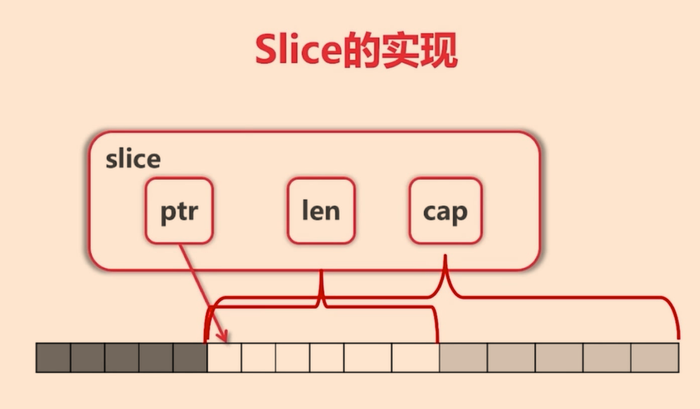
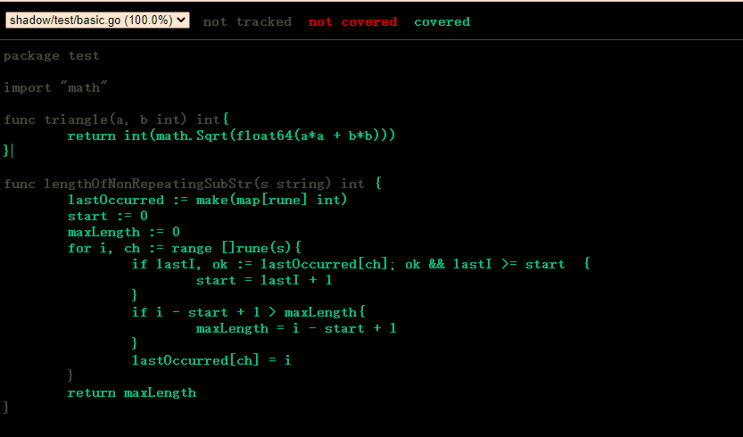
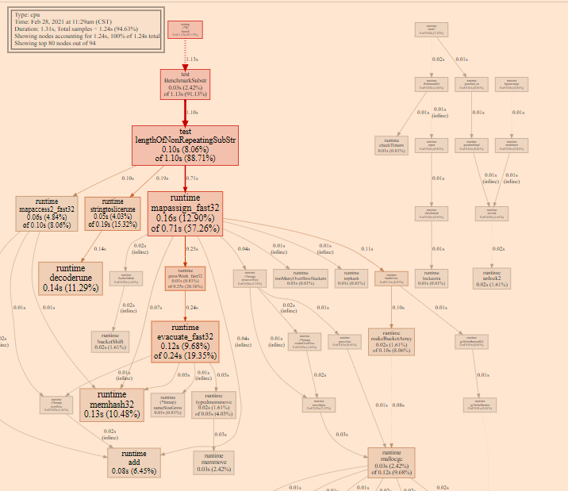
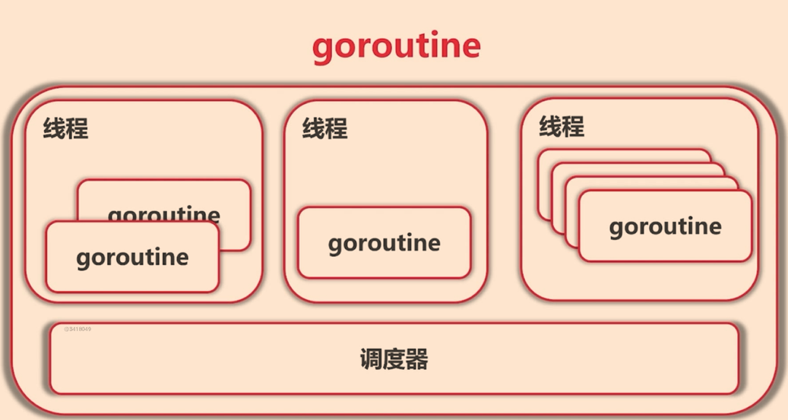
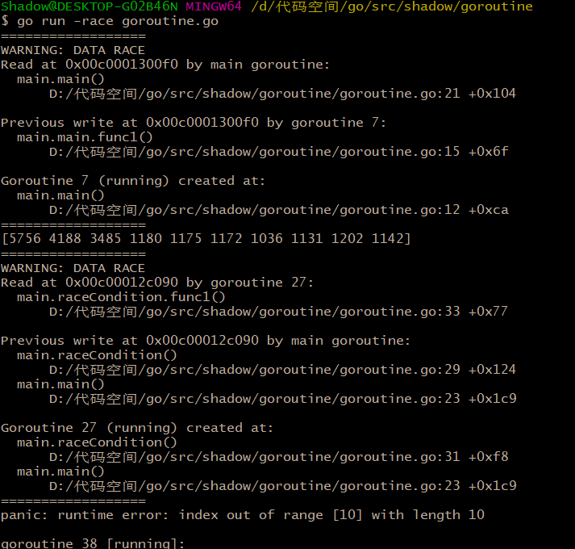
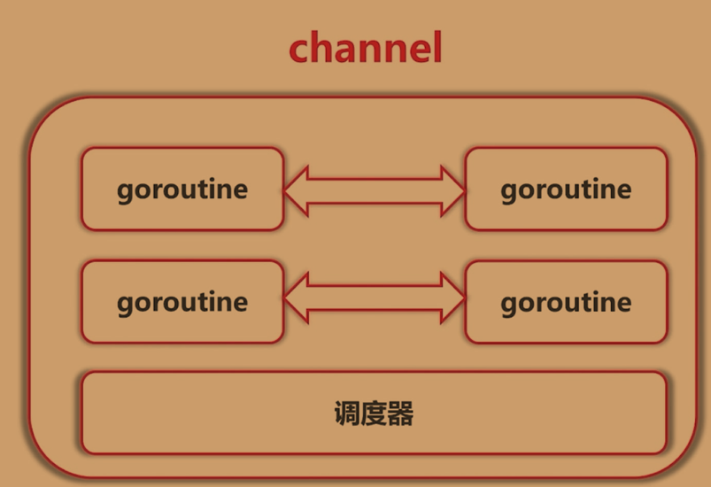
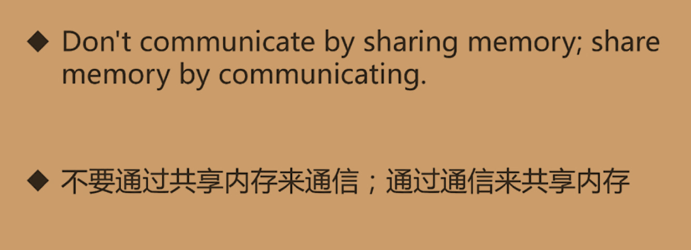

基础语法
内建基本数据类型
1、bool（相当于java中的boolean）、string。
2、（u）代表无符号，int，int8，int16、int32、int64、uintptr。
3、byte、rune（相当于java中的char，32位，占4个字节，为了应对多国语言，rune可以对字符重新编码，统一编码长度为4个字节，并重新存储）。
4、float32、float64，complex64、complex128（这个对应数学中的复数）。
强制类型转换
Go语言中需要进行显示的数据类型转换。
函数是一等公民
1、Go语言 调用方法返回的变量必须接受，如果不需要使用返回的数据，可以使用 “_”。
2、数组在方法中作为参数时，是作为值传递的也就说，是拷贝的。
Slice
1、Slice本身是没有数据的，是对底层数据的视图。
2、[1]int [2]int是不同类型的数组。
3、Go语言一般不直接使用数组，而是使用切片。
4、Slice可以向后扩展，但不能超过cap。
5、数组遍历可以使用range

变量及函数的可见性
Go语言同一个目录下面只能有一个包名，函数及结构体变量的命名规范决定其可见性。统一使用驼峰式命名。
1、首字母大写代表是公共的。首字母小写代表是私有的。
接口
Duck Typing
Go语言在面向对象时，仅支持接口和封装，不支持继承和多态。与Java中面向接口编程不同的是，Go采用的是一种duck typing的方式，由接口使用者来定义接口，实现者的代码只需要实现一个方法即可，不需要使用到使用者定义的任何类型。
接口可通过组合的方式进行扩展或者是更高层次的抽象设计。
Type Assertion
查看接口的实现，会发现Go语言的接口实现，是由一个类型Type，一个值Value（这个值可能是数值，也有可能是指针）。
取用接口实现对象通过：
1 | var r Retriever |
资源管理
在一些I/O操作中，往往要对资源打开，然后要保证资源的关闭，及时释放资源，防止导致资源耗尽。Go语言中通过defer延迟执行，保证在任何情况下，defer后面的方法总会被执行。所以通常习惯上，在打开一个资源后，后面要及时跟上defer关闭相应的资源。
1 | file, err := os.OpenFile("fib.txt", os.O_EXCL | os.O_CREATE, 0666) //存在文件会引起异常 |
异常处理
对于异常的处理，Go语言可以通过panic向上层抛出系统异常，也可以直接在函数的返回值中返回error的异常信息。
1、对于底层panic的异常，可以通过函数封装相应的函数调用，然后在外层函数体内，通过defer recover对相应的相应的异常进行统一处理。
1 | defer func() { |
2、对于返回值的异常，通过与零值（nil）对比，判断是否有异常，然后进行异常处理。
单元测试
Go语言的语法可以让我们更容易地去实践表格驱动测试，具备一下优点：
1、更容易分离测试数据和测试逻辑。
2、自定义出错信息。
3、允许部分失败。
Go语言测试文件编写规范：
1、测试用例文件与测试目标文件在同一目录下，测试文件命名为XXX_test.go
2、测试方法命名按照：Test[方法名称]（t *testing.T），性能测试要使用（b *testing.B）这样的参数。
3、使用2中的参数进行错误输出，例如：b.Errorf(“expected %d , but got %d”, length, actual)。
测试覆盖率
1、进入目标测试代码目录执行go test。
2、执行go test -coverprofile=c.out 生成测试覆盖率文件。
3、go tool cover -html c.out 查看测试覆盖率文件

性能测试优化
1、进行性能测试：go test -bench .
2、使用pprof进行性能调优：
1 | go test -bench . -cpuprofile cpu.out |

文档
1、需要godoc（需要安装）、go doc来查看文档
2、使用go doc fmt.Println来查看具体接口文档
3、可以使用Example关键字放在方法的开头，作为实例代码，运行测试的时候会检查Example的结果是否正确 （//Output 来写预期结果）
进阶知识
代码样例
并发编程
Goroutine
1、是一种协程 Coroutine。
轻量级的”线程”。
非抢占式多任务处理，由协程主动交出控制权。区别于线程，由操作系统调度、分时间片执行。
编译器、解释器、虚拟机层面的多任务。
多个协程可以在一个或者是多个线程上执行。
2 、子程序是协程的一个特例。调度器来决定协程是否放在同一个线程中。

3、Gorotine的代码实现很简单，任何函数只要加上 go就能送给调度器进行调度：
1 | go func(){ |
不需要在定义时区分是否是异步函数。
调度器在合适的点进行切换，可能切换的点：
I/O、select、channel、等待锁、函数调用、runtime.Gosched()。仅作为参考。
4、可以使用go run -race xxxx.go 检测数据冲突

Channel
1、Channel作为GoRoutine之间推荐的通信方式

2、Communication Sequential Process（CSP）

3、等待任务完成可以使用WaitGroup
Select
1、for select可以让我们同时做很多事情，满足条件就做。
2、在select case中，如果channel是nil会阻塞住，当满足条件了之后，会进行，可以利用这个机制，控制case是否执行。